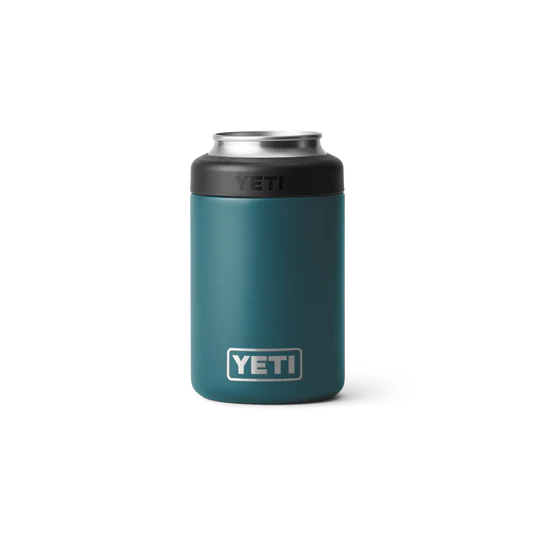
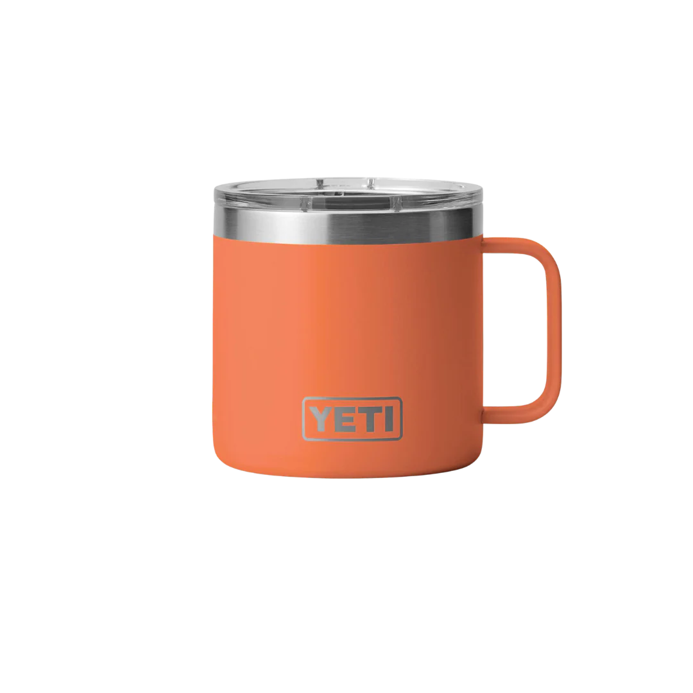

YETI Cup Styles
YETI Rambler 20 oz Tumbler

Stay hydrated in style with the YETI Rambler 20 oz Tumbler. Designed with double-wall vacuum insulation, this tumbler keeps your drinks hot or cold for hours. The durable stainless steel construction is puncture- and rust-resistant, making it perfect for any adventure. Plus, the no-sweat design means your hands and surfaces stay dry. Whether it’s coffee in the morning or iced tea by the pool, this tumbler is ready for anything.
Customization Available
YETI Rambler Colster
Say goodbye to lukewarm drinks with the YETI Rambler Colster. This innovative beverage holder is designed to keep your favorite canned or bottled drinks frosty cold. With its double-wall vacuum insulation, the Colster is perfect for tailgating, camping, or just relaxing at home. The no-sweat exterior ensures your hands stay dry, while the wide mouth allows for easy loading. Keep the good times rolling with a cold drink in hand!
Customization Available
YETI Rambler 14oz Mug
Wake up to the perfect cup of coffee with the YETI Rambler 14 oz Mug. Crafted for durability and functionality, this mug features double-wall vacuum insulation to keep your beverages hot for hours. The comfortable handle and easy-to-clean design make it an essential companion for your morning routine or evening campfire chats. Whether you’re at home or on an adventure, this mug will keep your drinks just the way you like them.